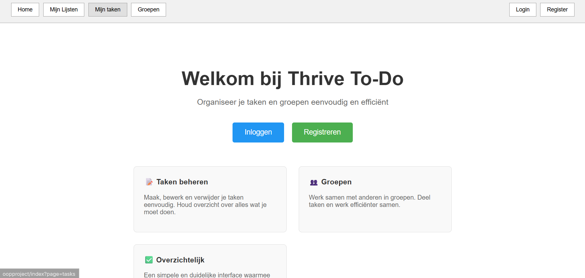

OOP Project
Dit is mijn OOP-project. het is een to-do-list die ik heb gemaakt me OOP, het is een CRUD je kan inloggen en registreren. Ik heb dit project gekozen om te laten zien dat ik met OOP kan programmeren.
Bekijk op GitHub
Dit is mijn OOP-project. het is een to-do-list die ik heb gemaakt me OOP, het is een CRUD je kan inloggen en registreren. Ik heb dit project gekozen om te laten zien dat ik met OOP kan programmeren.
Bekijk op GitHub